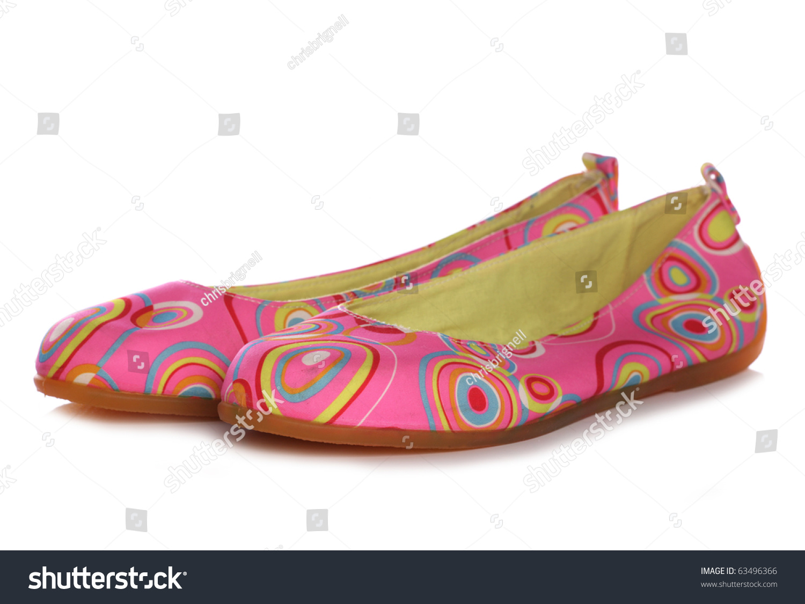

Jodhpuri Juti, often called Mojari, is a traditional handcrafted footwear from Rajasthan, India, known for its royal, comfortable, and durable design. Typically crafted from leather and adorned with intricate embroidery, thread work, or zari, these jutis pair perfectly with ethnic attire like Sherwanis and Kurta-Pyjama, popular among both men and women<
Handcrafted Quality: Made by skilled artisans, often using camel, goat, or buffalo leather
Global Recognition: Jodhpuri jutis are famous not only in India but globally, often worn by dignitaries and celebrities.
Modern Evolution: Contemporary versions (like those from MR JUTI) now include modern features like better heels and rubber soles for improved comfort and daily wear.
Weddings & Festivals: Essential footwear for grooms and wedding guests.
Formal & Casual Events: Versatile enough to be paired with chinos or traditional suits for a sophisticated look


